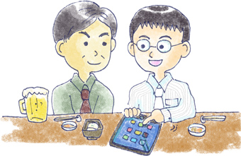

26: 会話のきっかけ作り
・初対面はきっかけが大事！

前回は初対面で重要な「自己紹介」の方法について、"基本的な項目と身近な話題を用意しておく"ということを述べました。自己紹介がスムーズにできるということは、仕事でもプライベートでも役に立つコミュニケーションスキルです。 自分の自己紹介に磨きをかけていきましょう！
では、今回は初対面の会話の「きっかけ作り」について述べたいと思います。
初対面の人と隣の席になり、こんなとき「何を話したらいいのだろう？」と戸惑った経験はありませんか？どんな話を振ったらいいか？ そうした話題の選択に困る場面は多々あります。
"初対面の会話ではお互いがどう話を切り込んでいくか"が一つの山となります。つまり、“会話のきっかけを作る“ということが大事になってきます。
・会話のきっかけがつかめないままだと…
会話のきっかけは、車の発車と同じようなものです。 車の発車時ってなかなかスピードが上がらず、アクセルをいっぱい踏みますね。 ギアが入ってある程度スピードに乗ってくると、あまりアクセルを踏まなくても進んでいってくれます。
それと同じように、会話も最初のきっかけで一番アクセルを踏み込まなくてはいけないのです。 つまり、話す内容を色々と考えたり、相手の様子を伺ったりと会話にギアを入れる作業をしていくことです。
ここできっかけがつかめていけば、あとは話しの流れでスムーズに会話が流れていきます。
しかし、きっかけがつかめないと話は始まっていきません。 すると、ずっと沈黙が続いた状態になってしまいます。 これではせっかくの相手と仲良くなるチャンスを逃してしまいます。 これではもったいないですよね。
そこで、ここからは会話のきっかけをつかむコツを身につけていきましょう！
・ポイントは身近な話題
では、初対面でどんなことをきっかけにして、会話につなげていけばいいのでしょうか？ それは、「身近な話題」からです。 しかし、このことはたいていのノウハウ本に書いてあることです。
この「身近な話題」というのはどんな話題なのでしょうか？ 「身近な」とはいっても色々なことが含まれますし、ちょっと抽象的ですよね。そこで、ポイントを挙げて考えていきましょう！
ポイントその１ 互いの共通点を見つけよう
初対面の相手との共通点は何か？それをまず考えてみましょう。 例えば、会社であれば「同じ課の○○さんって知ってますか？」 といった話題。これは、お互いに共通する人に関する話題です。
また、「○○って行ったことありますか？」 といった話題。これは場所に関する話題です。 こうしたお互いに共通する人や場所といった点を見つけて、話題として振っていくといいでしょう。
ポイントその２ 持ち物をネタにしてみよう
今持っている持ち物に関する話題も初対面では有効です。なにせ、目の前にあるものをネタにするわけですから簡単ですよね♪
特に最近ではスマートフォンなんかをネタに「どんなアプリ使ってますか？」とか「フェイスブックとかやってますか？」 なんてのも話題のきっかけになったりします。
もし、「スマフォとかフェイスブックは使ってないよ～」 なんて人は、「自分は使ってないんですけど、やっぱ便利ですか？」 「どんなことに使いますか？」 といった話題にもつなげていけます。
ポイントその3 今いる状況から拾っていこう
いまここにある状況から拾っていくという方法が取れます。 喫茶店や飲み会だったら「それおいしいですか？」 といった今飲んだり食べたりしているものをきっかけにするといいでしょう。そこから、好きな食べ物や料理の話といったように広げていく事ができます。
では、今あげた３つのポイントを使ってきっかけを作ってみましょう！ きっかけは小さなことでもいいので、多く上げられた方がより良いでしょう！
・練習問題
それではここで練習問題にチャレンジしてみましょう。会社の取引先との飲み会。どんな話題をきっかけに話せそうですか？
互いの共通点：
持ち物ネタ：
今いる状況：
それぞれ、きっかけが思いついたでしょうか？ なかなかその場面になってみないとわからないかもしれませんが、できるだけ場面を想像して考えてみましょう！
・解答例
互いの共通点：
「社長さんってどんな人なんですか？」
「あなたの会社の近くにどんなお店がありますか？」
持ち物ネタ：
「最近スマフォに変えたんですけど、使い方良く分からなくて…」
「良いかばん持ってますね～どこで買ったんですか～？」
今いる状況：
「日本酒を飲んでいらっしゃいますけど、よく飲むんですか？」
「あの店員さん愛想がいいですね～」
初対面での会話のきっかけをつかむためには、「身近な話題」と述べましたが、その身近な話題というのは、その場面に転がっている石を拾うようなものです。 よーく目を凝らして話題が落ちていないかを探してみましょう！
【今日のポイント】
★初対面の会話ではきっかけづくりが大事！
★共通点・持ち物・今の状況からきっかけを作って行こう♪
 |
|